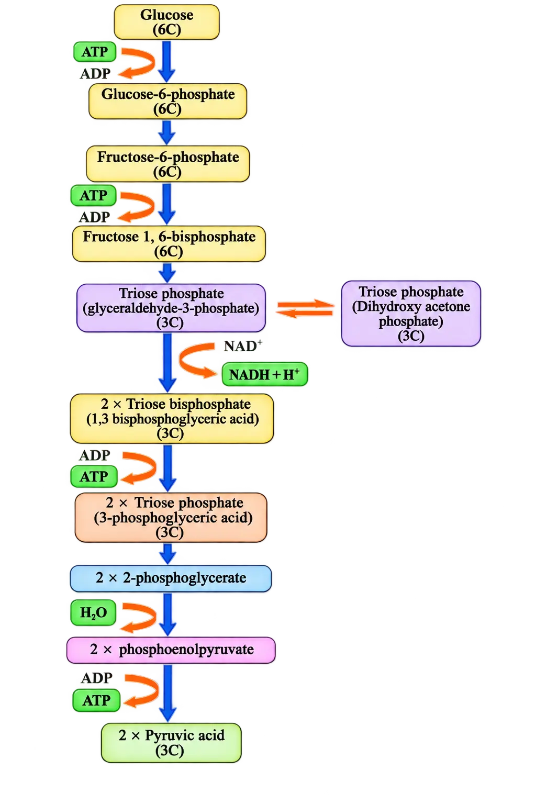
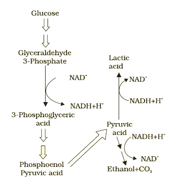
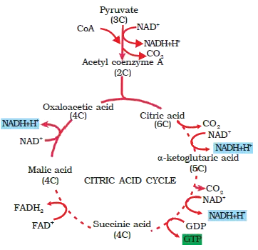
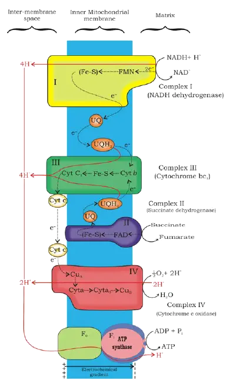
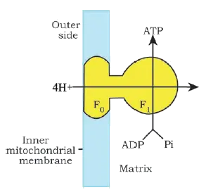
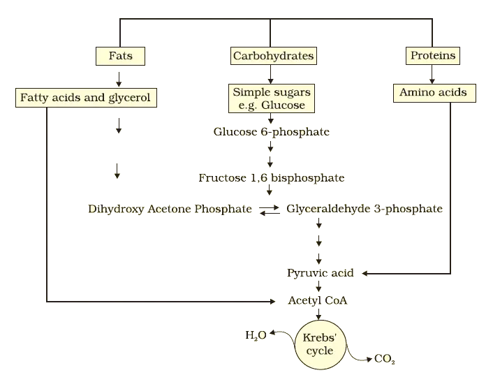

RESPIRATION IN PLANTS
Respiration in Plants
- Absorption
- Transport
- Movement
- Reproduction
- Even breathing itself
Source of energy for life processes: oxidation of “food”
Photosynthesis (chloroplasts)
→
Carbohydrates formed & stored
→
Food translocated to non-green parts
→
Respiration (cytoplasm + mitochondria)
Herbivoresobtain food directly from plants
Carnivoresobtain food indirectly via herbivores
Saprophytes (e.g., fungi)depend on dead & decaying matter
What the chapter focuses on (context for exam)
- Mechanism of breakdown of food inside cells to release energy (cellular respiration)
- Trapping of released energy for ATP synthesis
- Photosynthesis occurs in chloroplasts.
- Breakdown of complex molecules to yield energy occurs in cytoplasm and mitochondria.
Respiratory substrates
Carbohydratesusual substrate
Proteinscan be used in some plants under conditions
Fatscan be used in some plants under conditions
Organic acidscan be used in some plants under conditions
How energy is captured: step-wise oxidation and ATP
- Energy is released in a series of slow, step-wise reactions.
- Steps are controlled by enzymes.
- Energy is trapped as chemical energy in the form of ATP.
- ATP for energy-requiring processes
- Carbon skeletons (intermediates) used as precursors for biosynthesis of other cell molecules
12.1 Do Plants Breathe?
Gas exchange structures in plants
Stomatapores mainly on leaves for gas exchange
Lenticelsopenings in stems (especially woody) for gas exchange
Why plants can manage without specialised respiratory organs
1. Local self-sufficiencyeach plant part meets its own gas-exchange needs; little gas transport between parts
2. Lower demandroots, stems, leaves respire at far lower rates than animals; large gas exchange mainly during photosynthesis
3. Short diffusion distancesmost living cells lie close to the surface; diffusion path is not great even in bulky plants
Gas exchange in thick stems/roots: living vs dead tissues
- In stems, living cells occur in thin layers inside and beneath the bark.
- Stems have lenticels that allow gas exchange.
- Cells in the interior are largely dead and provide mechanical support.
- Most plant cells have at least some surface area in contact with air.
- Loose packing of parenchyma cells in leaves, stems, roots creates an interconnected network of air spaces facilitating diffusion.
Complete combustion of glucose vs respiration strategy
One-step oxidation
→
Energy lost mostly as heat (less usable)
Step-wise enzyme reactions
→
Energy conserved by ATP formation
Aerobic vs anaerobic situations: oxygen availability
Facultative anaerobescan live with or without O2
Obligate anaerobesrequire anaerobic conditions; cannot tolerate/use O2
12.2 Glycolysis
Meaning and naming
- glycos (Greek) = sugar
- lysis (Greek) = splitting
EMP pathway (Embden–Meyerhof–Parnas)
Where it occurs and who has it
- Occurs in the cytoplasm.
- Present in all living organisms.
- In anaerobic organisms, it is the only process in respiration (as stated here).
Overall outcome of glycolysis (as introduced here)
Source of glucose for glycolysis in plants
- Sucrose (the end product of photosynthesis)
- Storage carbohydrates (text continues beyond this portion)
Glycolysis: entry of sucrose and overview of the 10-step pathway
Sucrose entry into glycolysis (conversion to glycolytic intermediates)
Sucrose
→
Glucose + Fructose
→
Enter glycolysis
- Sucrose is converted into glucose + fructose by invertase.
- These two monosaccharides readily enter glycolysis.
ATP utilisation steps in glycolysis (energy investment)
- Glucose → Glucose-6-phosphate (phosphorylation)
- Fructose-6-phosphate → Fructose-1,6-bisphosphate (phosphorylation)
Splitting step: formation of two triose phosphates
DHAPDihydroxyacetone phosphate (3C)
PGAL3-phosphoglyceraldehyde (3C) = glyceraldehyde-3-phosphate
NADH formation step (oxidation of PGAL)
- Two redox-equivalents (two H atoms) removed from PGAL go to NAD+ → NADH + H+.
- PGAL is oxidised.
- Inorganic phosphate (Pi) participates to form BPGA.
ATP synthesis steps in glycolysis (energy payoff)
- BPGA → 3-phosphoglyceric acid (PGA) (energy released is trapped as ATP)
- Phosphoenolpyruvate (PEP) → pyruvic acid (ATP synthesised)
Carbon flow and named intermediates (as in Fig. 12.1)

Fate of pyruvate: the three major pathways
Lactic acid fermentationAnaerobic; pyruvate → lactic acid
Alcoholic fermentationAnaerobic; pyruvate → CO₂ + ethanol
Aerobic respiration (Krebs’ cycle)Complete oxidation → CO₂ + H₂O; requires O₂
Fermentation (anaerobic respiration pathways)
Alcoholic fermentation (yeast): pyruvate → CO₂ + ethanol
Pyruvic acid decarboxylasereleases CO₂ from pyruvate
Alcohol dehydrogenaseforms ethanol
Lactic acid fermentation: pyruvate → lactic acid
Role of NADH/NAD⁺ in fermentation (why fermentation can continue)
- NADH + H+ is the reducing agent.
- NADH + H+ is reoxidised to NAD+.

Energy yield and hazards of fermentation
- Fermentation releases not much energy.
- < 7% of the energy in glucose is released.
- Not all released energy is trapped in high-energy ATP bonds.
- Fermentation is hazardous because end products are acid (lactic acid) or alcohol (ethanol).
Aerobic respiration: mitochondrial oxidation of pyruvate
Entry step: pyruvate transport into mitochondria
Glycolysis happens in the cytoplasm — but aerobic respiration needs the “mitochondrial workspace” → so pyruvate must be moved into the mitochondria.
Crucial events of aerobic respiration and their mitochondrial locations
- Complete oxidation of pyruvate by stepwise removal of all hydrogen atoms, leaving three molecules of CO₂.
- Electrons (removed with hydrogen) are passed to molecular O₂ with simultaneous synthesis of ATP.
- First process (pyruvate oxidation to CO₂) occurs in the mitochondrial matrix.
- Second process (electron transfer to O₂ with ATP synthesis) is located on the inner mitochondrial membrane.
Oxidative decarboxylation of pyruvate: formation of acetyl-CoA
Link to Krebs’ cycle (TCA cycle): naming and origin
Start of TCA cycle (first reactions up to α-ketoglutarate)
Acetyl group + OAA + H₂O
—(citrate synthase)→Citric acid + CoA (released)

Electron Transport System (ETS) and Oxidative Phosphorylation
Why NADH/FADH2 matter (link from TCA to ATP formation)
Think of NADH/FADH2 as “charged batteries” made in TCA — the big payoff (ATP) happens when they’re “discharged” in the ETS.
Electron Transport System (ETS): definition and location

NADH/FADH2 oxidised
→
Electrons flow through carriers (ETS)
→
O2 reduced to H2O
→
Energy captured to synthesise ATP
ETS components and electron flow (Complex I to IV)
Complex INADH dehydrogenase; oxidises NADH (matrix side) and transfers e− to ubiquinone
Complex IIEntry point for e− from FADH2 generated during succinate oxidation (TCA)
Ubiquinone (Q)Lipid-soluble carrier in inner membrane; becomes reduced to ubiquinol (QH2)
Complex IIICytochrome bc1; transfers e− from QH2 to cytochrome c
Cytochrome cSmall mobile protein on outer surface of inner membrane; carries e− from III → IV
Complex IVCytochrome c oxidase; contains cytochromes a and a3 + two copper centres; transfers e− to O2 → H2O
- NADH (from mitochondrial matrix, produced in TCA) is oxidised by NADH dehydrogenase (Complex I) and its electrons move to ubiquinone.
- FADH2 donates reducing equivalents via Complex II (formed during oxidation of succinate in TCA), also feeding into ubiquinone.
- Ubiquinol is oxidised as electrons pass to cytochrome c through Complex III.
- Cytochrome c shuttles electrons to Complex IV, where electrons ultimately reduce O2 to H2O.
Coupling electron flow to ATP formation (Complex V)
- Oxidation of 1 NADH → 3 ATP
- Oxidation of 1 FADH2 → 2 ATP
Role of oxygen in aerobic respiration
No oxygen = “traffic jam” at the end of the chain → electrons can’t be passed on → NADH/FADH2 can’t unload energy properly.
Why it is called oxidative phosphorylation
- In respiration, the proton gradient (used to make ATP) is generated using energy released during oxidation–reduction (redox) reactions in the ETS.
- This contrasts with photophosphorylation, where light energy is used to generate the proton gradient.
OXPHOS
ATP Synthase (Complex V) and Proton-Driven ATP Synthesis
Structure: F0–F1 components
F1 headpiecePeripheral membrane protein complex; contains catalytic site for ATP synthesis from ADP + Pi
F0 partIntegral membrane protein complex; forms proton (H+) channel across inner membrane
Mechanism: proton flow couples to catalysis

High H+ (intermembrane space)
→
H+ flows through F0
→
F1 catalytic site works
→
ATP formed (ADP + Pi → ATP)
The Respiratory Balance Sheet
Purpose and why it is “theoretical”
Assumptions required to calculate net ATP per glucose
Sequential orderly pathwaySubstrates form products step-by-step, and glycolysis → TCA → ETS occur one after another
Glycolytic NADH enters mitochondriaNADH formed in glycolysis is transferred into mitochondria and undergoes oxidative phosphorylation
No diversion of intermediatesNo pathway intermediates are used to synthesise any other compound
Only glucose is respiredNo alternative substrates enter the pathway at intermediate stages
Why these assumptions fail in living systems
- Pathways function simultaneously, not strictly one after another.
- Substrates can be withdrawn and introduced as needed (intermediates used in biosynthesis).
- ATP is utilised as and when needed (continuous turnover).
- Enzymatic rates are controlled by multiple regulatory mechanisms.
Net ATP gain (as given for the theoretical calculation)
Fermentation vs Aerobic Respiration (Comparison)
Extent of glucose breakdownFermentation = partial breakdown; aerobic respiration = complete degradation to CO2 + H2O
ATP yield per glucoseFermentation = net gain of only 2 ATP per glucose degraded to pyruvic acid; aerobic respiration = many more ATP
Reoxidation of NADHFermentation: NADH → NAD+ slowly; aerobic respiration: oxidation is very vigorous
Amphibolic Pathway
Entry of different substrates into the respiratory pathway
CarbohydratesUsually converted to glucose before respiration
FatsBroken into glycerol + fatty acids first
Fatty acidsDegraded to acetyl CoA → enters pathway
GlycerolConverted to PGAL → enters pathway
ProteinsProteases → amino acids; after deamination enter as pyruvate/acetyl CoA or within Krebs’ cycle
Why respiration is called an amphibolic pathway
Fatty acids breakdown
→Acetyl CoA enters respiratory pathway
Fatty acids synthesis need
→Acetyl CoA withdrawn from respiratory pathway
- Respiratory pathway provides intermediates used for synthesis (anabolism).
- Respiratory pathway also accepts substrates for breakdown (catabolism).

Respiratory Quotient (RQ)
Definition and formula
RQ for carbohydrates (complete oxidation)
RQ for fats (example: tripalmitin)
RQ for proteins
- When proteins are used as respiratory substrates, RQ ≈ 0.9.
RQ in real living organisms (mixed substrates)
Chapter Summary (This Portion)
Plants do not have special breathing organs; gaseous exchange happens by diffusion mainly through stomata and lenticels (most living cells have surfaces exposed to air).
Cellular respiration = oxidation involving breaking of C–C bonds of complex organic molecules → releases large amount of energy.
Respiratory Substrates
Glucosepreferred substrate for respiration
Fatscan also be oxidised → energy yield
Proteinscan also yield energy (via metabolic pathways)
Glycolysis (Cytoplasm)
1 Glucose
→Enzyme-catalysed steps
→2 Pyruvic acid molecules
Fate of Pyruvate (Depends on O2 + Organism)
Under anaerobic conditions, pyruvate can undergo lactic acid fermentation or alcohol fermentation.
Think of pyruvate like a “crossroads molecule” — oxygen availability decides which road it takes.
Fermentation (Anaerobic)
- Occurs anaerobically in many prokaryotes
- Occurs in unicellular eukaryotes
- Occurs in germinating seeds
Aerobic Respiration (Eukaryotes)
Pyruvic acid enters mitochondria
→Converted to acetyl CoA + CO2 release
→Krebs’ cycle (matrix)
Krebs’ cycle generates NADH + H+ and FADH2; along with NADH from glycolysis, these drive ATP synthesis.
ETS + Oxidative Phosphorylation
ETS is located on the inner mitochondrial membrane: electrons pass through carriers, releasing energy that is trapped for ATP synthesis = oxidative phosphorylation.
In oxidative phosphorylation, O2 is the ultimate electron acceptor and is reduced to water.
Nature of the Respiratory Pathway
Respiratory pathway is amphibolic → plays both catabolic and anabolic roles.
Respiratory Quotient (RQ)
RQ depends on substrate (different fuels → different CO2 : O2 relationship).
CarbohydratesRQ = 1.0
FatsRQ < 1 (tripalmitin ≈ 0.7)
ProteinsRQ ≈ 0.9